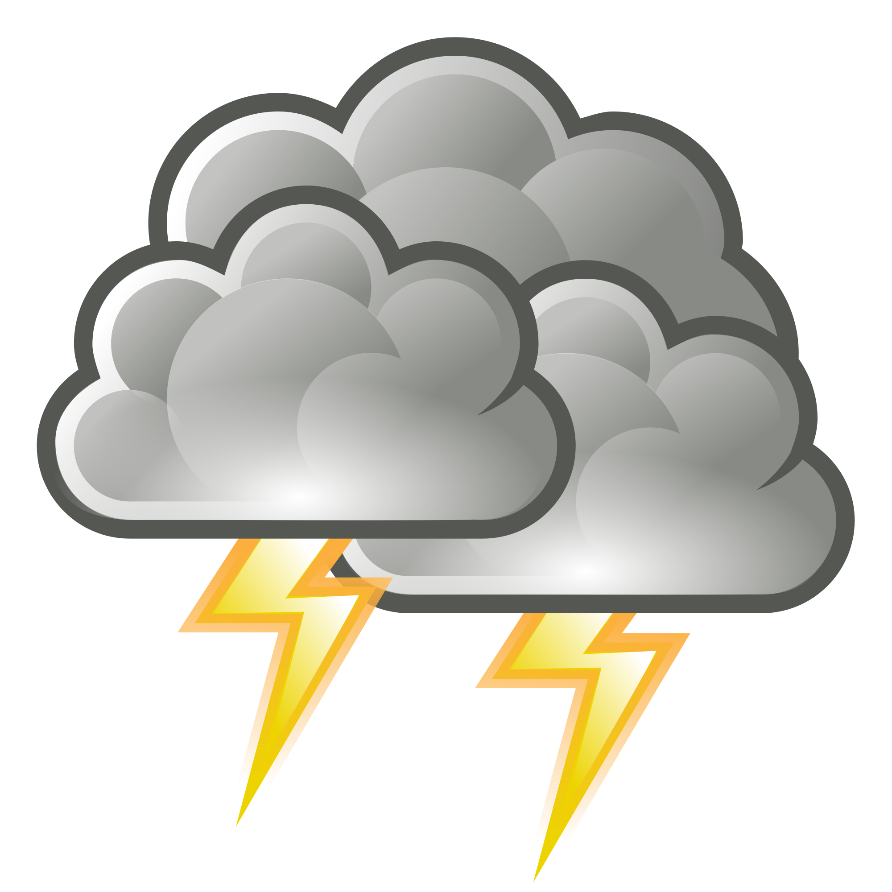
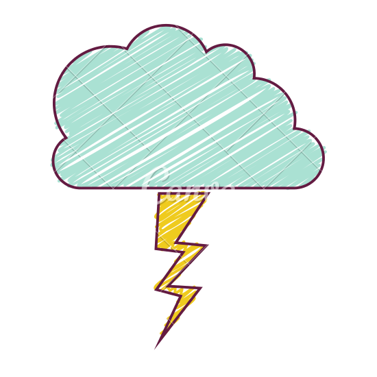
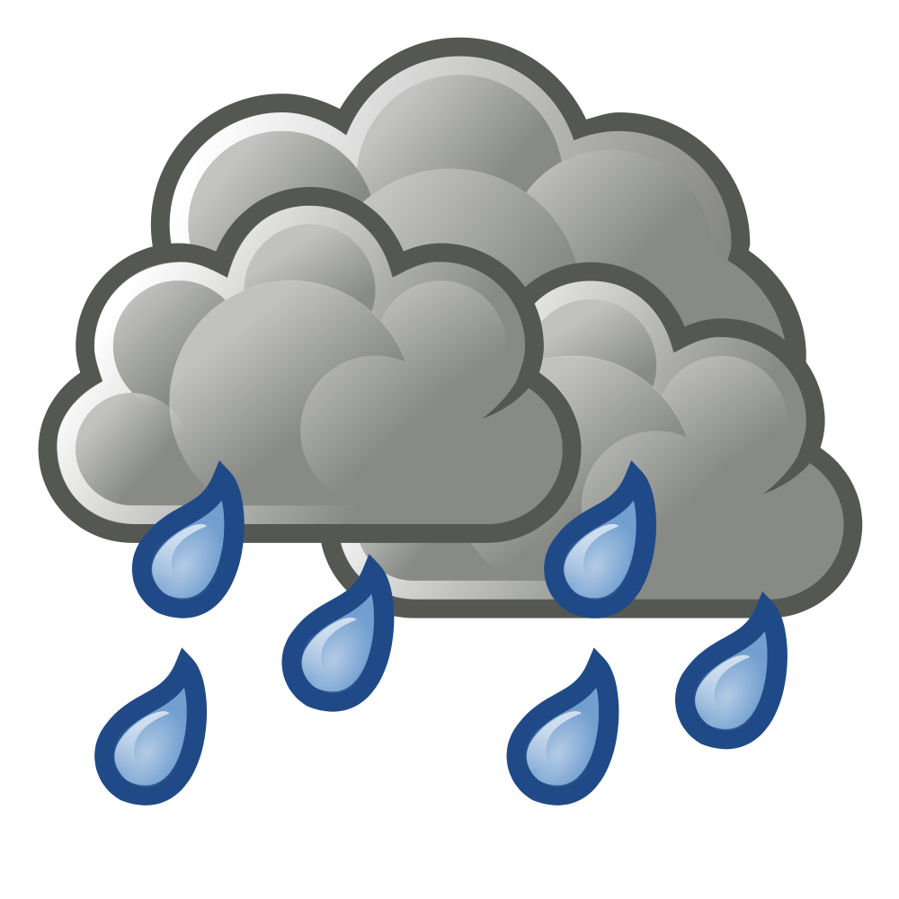

Na aula de Instrumentação e Medição fomos introduzidos a novos temas com relação a elétrica. E o projeto consistia em construir ao longo do semestre uma miniestação meteorológica utilizando conhecimentos de programação e conhecimento sobra a utilização do FabLab.
Ao longo do semestre aprendemos conceituação e aplicação de elétrica, programação com Arduino, utilizamos instrumentos como analog Discovery, aprendemos a utilizar aparelhos de medidas, tudo para realizar o projeto com a combinação de todo o conhecimento.
O projeto pode ser dividido em etapas, tais como a aprendizagem sobre elétrica, adquirir um conhecimento de elétrica suficiente para realizar o trabalho, entender como funcionam as placas de Arduino, introduzir a linguagem de programação, aprender a desenhar e imprimir placas de circuito, e a finalização como a parte de soldagem e criação do recipiente protetor da miniestação
Durante a vistoria final foram avaliadas os objetivos como a precisão do aparelho, segurança da placa, se ela estava protegida e ainda sim conseguindo fazer os registros necessários, tudo para terminar de avaliar se os conhecimentos foram bem aplicados.
